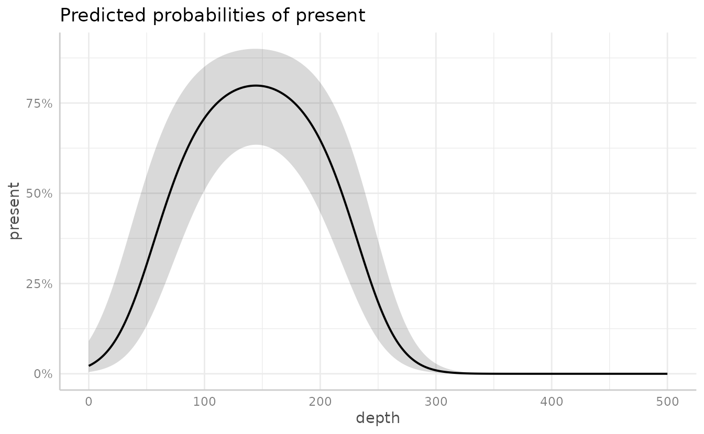
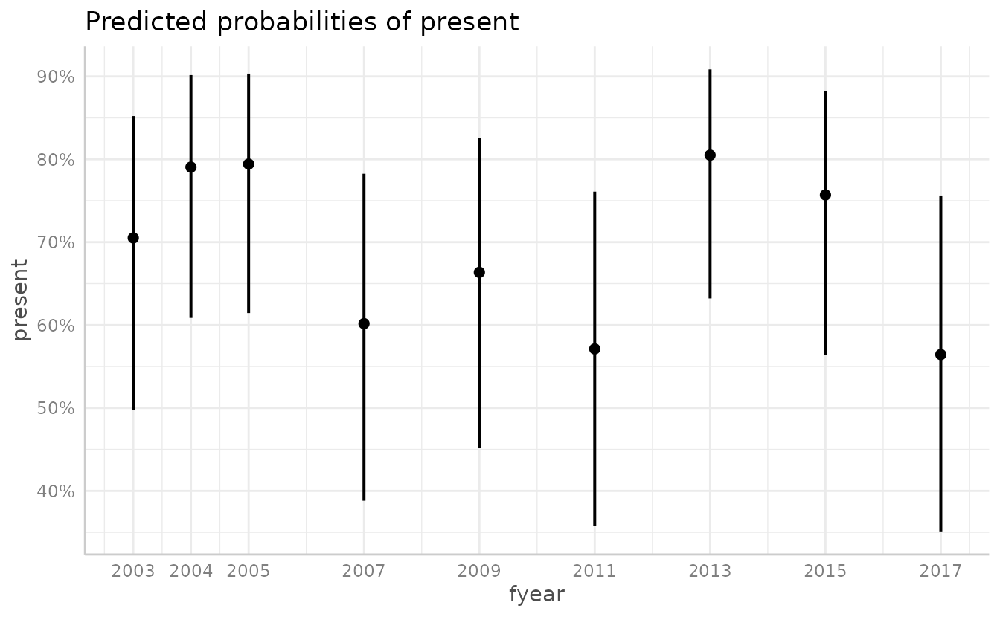
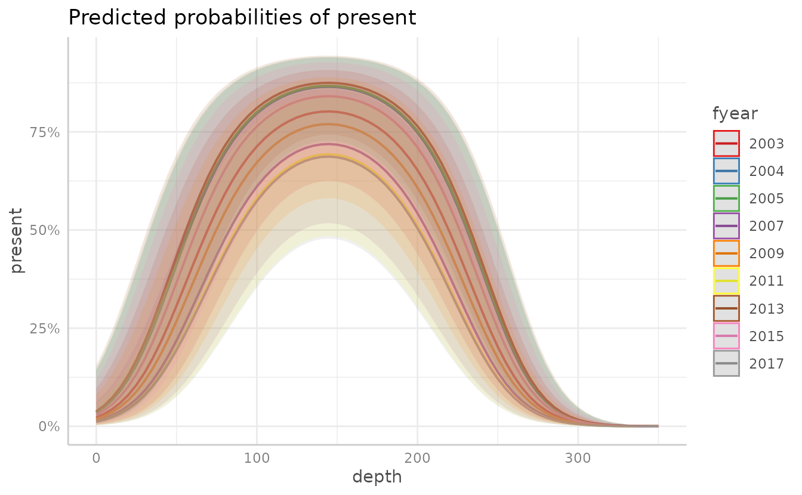

Visualizing marginal effects in sdmTMB models with ggeffects
Julia Indivero, Sean Anderson, Lewis Barnett, Philina English, Eric Ward
2025-11-22
Source:vignettes/articles/ggeffects.Rmd
ggeffects.RmdIf the code in this vignette has not been evaluated, a rendered version is available on the documentation site under ‘Articles’.
The package ggeffects can be used to plot marginal effects of given predictor variables in sdmTMB models.
A advantage to this approach over visreg, is that ggeffects calculates marginal effects with the effects package using the parameter covariance matrix. This is nearly instant compared to visreg, which has to calculate conditional effects by calculating predictions with TMB.
A disadvantage to using ggeffects is that it will only work for
regular linear effects in the main model formula. I.e., it will not work
with smoothers (internally these are random effects) or breakpoint
(breakpt()) effects.
Another important distinction is that
ggeffects::ggeffect() is plotting marginal
effects. This means the effects are “marginalized” or “averaged” over
the other fixed effects. visreg::visreg() is plotting
conditional effects. This means they are conditional on
the other predictors being set to certain values.
ggeffects::ggpredict() also does conditional effects,
and this is explored at the end of this vignette.
Example with Pacific cod presence
To start, we will use the Pacific cod example data. We will fit a model of fish presence/absence with covariates of depth and a fixed effect of year using a Tweedie distribution.
pcod$fyear <- as.factor(pcod$year)
mesh <- make_mesh(pcod, c("X", "Y"), cutoff = 20)
fit <- sdmTMB(present ~ poly(depth, 2) + fyear,
data = pcod,
mesh = mesh,
spatial = "on",
family = binomial()
)We can then use ggeffects::ggeffect() to see the effect
of depth on the probability of Pacific cod being present. We can control
what range and interval of depths are predicted within the function
(e.g. [0:500 by=1]).

We can also plot the effects of each year.

We can add in data points
plot(g, show_data = TRUE)
#> Data points may overlap. Use the `jitter` argument to add some amount of
#> random variation to the location of data points and avoid overplotting.
We can also use ggeffect to plot multiple variables by
listing them in terms = c(), with the first term listed
indicating the variable to be plotted on the x-axis, and the remaining
listed terms (up to four total) indicating the groups. Adding
facet = TRUE will show each year as a separate plot,
instead of overlain on one plot.

Adding facet = TRUE will show each year as a separate
plot, instead of overlain on one plot.
plot(dat, facet = TRUE)
We can also use make our own ggplot plot by calling the ggeffects
object dat as the data frame.

Plotting using with a continuous response (here density)
rather than presence-only is similar. For instance:
We can fit a model with an interaction of two continuous variables:
For plotting two continuous variables, ggeffect() will
make the non-target (2nd) variable discrete by selecting different
levels.

plot(g5, facet = TRUE)
To specify the levels rather than letting ggeffect()
choose them, use brackets with the selected values within the term list,
for instance
ggpredict()
ggeffects::ggpredict() can be used to make conditional
effects plots of sdmTMB models, including models with smoothers (but not
currently including delta models due to a recent
change in ggeffects).
Here’s an example:
pcod$fyear <- as.factor(pcod$year)
mesh <- make_mesh(pcod, c("X", "Y"), cutoff = 20)
fit <- sdmTMB(present ~ s(depth) + fyear,
data = pcod,
mesh = mesh,
spatial = "on",
family = binomial()
)
g <- ggpredict(fit, "depth [0:400 by=2]")
#> Model contains splines or polynomial terms. Consider using `terms="depth
#> [all]"` to get smooth plots. See also package-vignette 'Adjusted
#> Predictions at Specific Values'.
plot(g)
g <- ggpredict(fit, terms = c("depth [0:350 by=5]", "fyear"))
#> Model contains splines or polynomial terms. Consider using `terms="depth
#> [all]"` to get smooth plots. See also package-vignette 'Adjusted
#> Predictions at Specific Values'.
plot(g)
plot(g, facet = TRUE)We can extract the data to make our own plot:
df <- as.data.frame(g)
glimpse(df)
#> Rows: 639
#> Columns: 6
#> $ x <dbl> 0, 0, 0, 0, 0, 0, 0, 0, 0, 5, 5, 5, 5, 5, 5, 5, 5, 5, 10, 10…
#> $ predicted <dbl> 0.007356842, 0.011520076, 0.011879286, 0.004558189, 0.006096…
#> $ std.error <dbl> 1.385601, 1.380047, 1.381375, 1.384950, 1.382717, 1.381915, …
#> $ conf.low <dbl> 0.0004900719, 0.0007788444, 0.0008013158, 0.0003032307, 0.00…
#> $ conf.high <dbl> 0.10074152, 0.14839641, 0.15270207, 0.06465746, 0.08441030, …
#> $ group <fct> 2003, 2004, 2005, 2007, 2009, 2011, 2013, 2015, 2017, 2003, …
ggplot(df, aes(
x, predicted,
ymin = conf.low,
ymax = conf.high,
colour = group, fill = group
)) +
geom_ribbon(alpha = 0.4, colour = NA) +
geom_line() +
facet_wrap(vars(group)) +
labs(x = "Depth (m)", y = "Predicted", colour = "Year", fill = "Year")